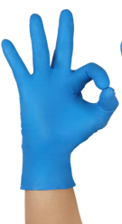
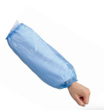

European market contact -- INTCO Medical
01 / PERSONAL DESK
Your trustedglove partneracross Europe.
A direct, responsive route to disposable glove solutions for healthcare, food service, professional users and European distributors.
International Business
A clear contact for your next glove project.
From the first product conversation to samples, technical documents and packaging requirements, I coordinate with the INTCO team so European partners can move forward with confidence.
Choose by application.
Source with clarity.

Nitrile
Selected latex-free options for healthcare, food and professional applications, subject to product specification.
Most requested in Europe >02Vinyl
Cost-effective options for general service, food handling and cleaning, subject to product specification.
High-volume use >03Protective Apparel
Protective apparel options for healthcare, care and professional environments, subject to product specification.
View INTCO products >04
PE Product
PE solutions for food service, cleaning, beauty and other low-risk applications, subject to product specification.
Packaging available >Protection designed for different European contexts.
Manufacturing & quality control
Global manufacturing.
European focus.
INTCO Medical is a global healthcare products manufacturer. Through my European market desk, customers can connect to the company's glove portfolio without navigating a broad corporate catalogue.
Complete support,
clear documentation.
INTCO Medical offers a complete product portfolio and supporting quality, compliance and technical documentation. Exact specifications and applicable certifications are confirmed by product and market.
Talk to Nicole >Let's discuss your
next project.
Reach Nicole directly for product direction, samples, technical documents and European market support.